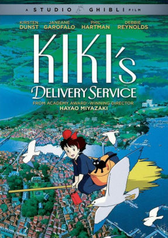

KiKi's Delivery Service  KiKi's Delivery Service Movie Cover A young witch, on her mandatory year of independent life, finds fitting into a new community difficult while she supports herself by running an air courier service. Return to the Studio Ghibli Fan Home Page